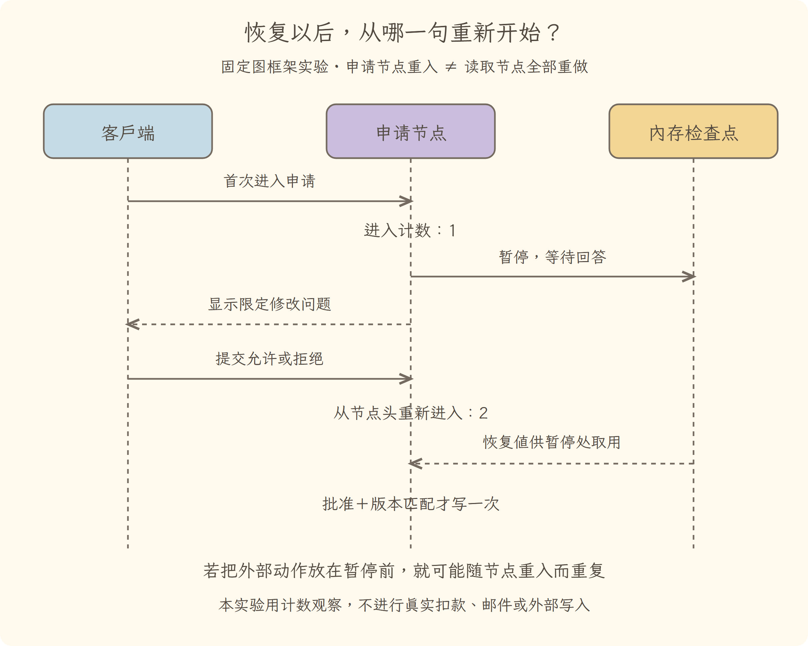

学习导航
第17讲 · 拆掉框架名字，你还能解释这次排查吗
源码基线：cd5ef8148158c3a752a658978873241fdf8e2bbc。业务案例为虚构 Java 运费服务；图与流程是教学推演，源码事实另有固定证据。
从这里接上
具备从报告到验证的完整证据链。本讲要回答：拆掉框架名字，你还能解释这次排查吗？
上一讲解决了“用边界三测、实际退出码、差异和授权记录验收”；这仍不能代替本讲要补的责任。
阅读与完成标准
先看逐步讲解，再做练习。视觉课件用于复习，词典随用随查，不要求先背英文。预计正文阅读 20–35 分钟，练习 10–20 分钟；这是安排建议，不是学会的证明。
读完应能解释：教学运行器通过所有断言，是否证明真实模型可靠？ 还要能预测：去另一个框架找不到 Session（会话）类，是不是没有记忆机制？ 最后从源码证据定位相应责任。
现在必须懂的是本讲怎样改变证据或动作状态；具体框架中的其他选项知道存在即可，不用一次读完整个包。语法卡住可查补课 A、补课 B，工程定位查补课 C，看完返回此处即可。
工程深度验收
能把反馈排查与确定性授权、验收接起来，并解释另一框架暂停恢复的具体差异。 完成不是看过正文：需要预测实验分歧、实际运行、提交轨迹，并解释尚未覆盖的环境和输入范围。
本讲交接
用最小教学运行器复现拒绝、恢复、分工与验收约束。从头到尾复述任务，并明确教学实验与真实端到端验证的差别。
← 第16讲：完成验收 · 主线正文完结
视觉课件
第17讲 · 拆掉框架名字，你还能解释这次排查吗
实验关系图

LangGraph（图式智能体编排框架）1.0.1同进程内存实验观察申请节点重入两次；DeepSeek Harness源码恢复事实不等于重放外部动作。 实验与限制分别说明，不能用作者绘图代替真实运行证据。
源码基线：cd5ef8148158c3a752a658978873241fdf8e2bbc。业务案例为虚构 Java 运费服务；图与流程是教学推演，源码事实另有固定证据。
当前现场
具备从报告到验证的完整证据链。固定业务约定不变：满 10000 分免运费；原实现在等于时返回 800。禁止用修改预期的方式让测试变绿。

三分钟复述
先描述左格缺什么，再说明中格采取的机制，最后指出右格新增了哪些证据或责任。用最小教学运行器复现拒绝、恢复、分工与验收约束。不要只读图上的物件名；删掉中间这项机制，任务会在哪一步失去依据？
本讲最容易误会的是：去另一个框架找不到 Session（会话）类，是不是没有记忆机制？ 不能凭名字判断。追踪记录、模型输入与恢复路径，检查责任由谁承担，而非强行匹配本书类名。
从图返回源码
图只表达教学关联与状态变化，不代替完整调用顺序。源码定位提供实现或契约证据，正文解释映射和边界。
← 第16讲：完成验收 · 主线正文完结
逐步讲解
第17讲 · 拆掉框架名字，你还能解释这次排查吗
源码基线：cd5ef8148158c3a752a658978873241fdf8e2bbc。业务案例为虚构 Java 运费服务。跨框架实验另固定 LangGraph（图式智能体编排框架）1.0.1，不能把两个项目的实现约定混为一谈。
一、现在要交付的，不是十七个概念的复述
从第一讲开始，我们一直在做同一件事：查清“满 100 元免运费”的失败原因，获得限定修改许可后修复，再验证当前版本。你现在应能解释：材料怎样进请求；模型为何继续读；工具请求由谁执行；历史怎样保存；中断后如何确认现场；多份结果怎样汇合；最后凭什么结案。
但能解释还不够。作为工程师，还应当能对一段执行轨迹指出哪一层违约，修改一个有限机制并验证没有破坏授权、版本和停止边界。最后一讲分两步检验：先把本书已经运行过的部件接起来，再把同一问题放进另一种框架，观察相同责任下不同的运行行为。
本例业务很小，不需要为了修一个比较符把全套功能都装上。反复叠加困难是为了学习工程机制，不是在宣传复杂架构优于简单程序。
二、先接起来：动态排查，确定性修复与验收
旧式演示若直接按顺序调用“读报告、读代码、修改、测试”，只能说明几个工具函数会用，不能证明存在反馈循环。第二讲已经换成真正的循环驱动：受控模型根据当前已收到的工具结果选择下一动作；工具结果写回后再构造下一次请求。提前放入报告会改变它的选择；改变业务约定会让它拒绝套用既定结论。
这里的 Stub（测试替身）不是聪明模型，而是按可检查规则行动的演员。我们用它测舞台的交接机关，不测演员即兴推理。它仅识别本例有限材料，不会理解任意 Java 项目；不能把“文件存在”当成已经理解内容。
综合演示先运行这段排查循环，得到三步、三次请求和等待修改授权的结论。接着故意尝试一次未授权补丁，观察拒绝且文件未变。可信应用收到独立用户批准后，才开启一次限定修改权，重读当前代码指纹，应用补丁，再跑教学三测。
注意后半段是明确写在程序中的授权修复流程，不是伪称模型动态决定每一步。这正是第十一讲的混合设计：开放排查用反馈循环，已经确定的权限、版本和验收用程序约束。替换模型不应该顺便改掉这些约束。
完整代码在本讲练习页。把第二讲的三个文件与 course-demo.cjs 放在同一目录，运行：
node course-demo.cjs
作者实际观察：排查正常结束，但此时业务尚未修复；未授权写入被拒；明确授权后模拟三测退出码为 0；恢复一个新执行器不会恢复旧的写权限；再改变源码，旧绿灯不能通过当前验收。这里的文件与测试仍是内存模拟，真实 Java 实验在第十六讲单独运行，不能混称同一次端到端智能体测试。
对应上游时，沿主循环找准入和步骤，沿工具服务找执行，沿会话找事实。教学循环没有复刻流式适配、完整插件树、持久化事务或平台沙箱；这些机制要回到前面已经展开的源码与实验。
三、迁移的第一步：把责任画出来，再找新框架的入口
现在用 LangGraph（图式智能体编排框架）1.0.1 再做这个任务。选择它是因为它能让我们直接比较图节点、状态更新、条件分支和暂停恢复；并不是说它能自动解决授权或模型正确性。
本书实验固定在该版本提交。先认三项实际契约：
- StateGraph（状态图构造器）：定义节点以及节点返回的状态更新。像把任务白板的栏目和工序连起来，但白板更新不是任意外部动作的事务。
- Conditional Edge（条件边）：节点结束后，根据当前状态选择下一节点。本例读取结果不足就继续取证，足够才进入申请。
- Checkpointer（检查点保存器）和 Interrupt（可恢复暂停）：保存运行状态并把待回答问题交给调用方；恢复时如何重走代码，必须读它自己的规则。
映射到本任务：
| 本次责任 |
本书循环中的位置 |
迁移实验中的位置 |
| 判断下一份材料 |
受控模型读取工具反馈 |
判断节点读取图状态 |
| 取得报告与代码 |
工具执行器及结果消息 |
读取节点返回状态更新 |
| 决定继续 |
外层循环与停止候选 |
条件边回到判断或进入申请 |
| 等待用户 |
暂停结案，独立收取授权 |
申请节点暂停，客户端提交恢复值 |
| 守住写入 |
执行器的一次授权和版本校验 |
图外执行状态加节点内写入前校验 |
| 验证业务 |
独立验收当前代码与新测试 |
显式验收结果，不靠到达结束节点 |
表是责任映射，不表示一个节点必然等于 DeepSeek Harness 的一步，更不表示检查点等于仅追加会话日志。循环、图调度、消息派生和持久化可以采用不同实现；要迁移的是不变量与验证方法。
四、最值得亲自观察的差异：恢复不是从暂停行下一句接着执行
在本书第八讲，我们反复强调“加载记录不应直接重放外部编辑”。现在不能把这句话粗暴翻译为“所有框架恢复时都不会重走代码”。
LangGraph（图式智能体编排框架）的暂停实现与说明明确：节点第一次暂停时抛出可恢复中断；客户端传入恢复命令后，该节点从头重新执行，再次走到暂停位置时取得已提供的值。不是恢复 Python（编程语言）解释器当时那一帧的指令指针。
我们的实验故意把“进入申请节点”的计数放在暂停前，补丁放在暂停后，且补丁还检查图外的可信授权和代码指纹。实际轨迹如下：
拒绝：读报告 → 读约定与代码 → 进入申请 → 恢复后再次进入申请
允许：读报告 → 读约定与代码 → 进入申请 → 恢复后再次进入申请 → 补丁一次
两种情况下，读取各发生一次，申请节点进入两次；拒绝路径没有补丁。这是执行过的框架行为，模型仍为受控策略，不是付费模型测评。
现在做反事实推演：如果把扣款、发邮件或编辑文件放在暂停之前，节点恢复后可能再次触发。计数只是观察重入的安全替身，不能把“只有一次节点名字”误以为“外部动作只会一次”。副作用需要拆到恰当节点或可持久任务边界，结合幂等键、结果记录及现场核对；不要仅靠模型承诺不重复。这与官方持久执行说明所强调的持久任务边界相呼应，但图接口与函数式接口的重放起点仍应分别阅读，不能混成一种行为。
五、真实图框架不等于真实磁盘恢复，更不等于自动安全
本实验用 InMemorySaver（内存检查点保存器），所以同一进程内能暂停恢复，但关闭 Python（编程语言）进程后数据就丢了。它验证的不是进程崩溃持久化。真实持久后端要另做重启、并发写入、版本升级和重复动作测试。
另一个边界是信任：恢复值为允许，只是本实验可信应用明确收取用户回答的途径；从模型文本或一段摘要解析出“允许”不应自动给执行器授权。示例额外用图外的一次许可作检查，目的是把知识状态与访问权分开。生产系统还需要身份、作用域、有效期与审计，不是加一个布尔值就完成权限系统。
版本也不能省。申请时读到的代码与真正写入时可能不同，所以补丁前重新计算指纹并比较；不匹配就重新读取，而不是强行套旧补丁。这个原则在两个框架中相同，实现位置却由各自执行结构决定。
本次跨框架实验的完整代码和依赖版本在练习页；它没有模型或网络调用。保存器库有默认反序列化配置未来变化的提醒，实验只使用自身生成的内存数据，不加载外来检查点；生产选型仍须核对当时版本的安全与兼容边界。
六、再看一种不同选择，不必把每个 Agent（智能体）都装进同一套类名
作为阅读迁移，smolagents（轻量智能体框架）的官方智能体说明区分代码动作和结构化工具调用：前者生成可执行代码，后者生成结构化调用。它们都需要选择、执行、观察和停止，却把动作表达及执行风险放在不同位置。
这部分是官方文档对照，本书没有运行该框架实验，不声称某一种更聪明或更安全。你可以据此提出新的源码阅读问题：代码执行环境限制哪些能力？一次代码动作能调用多少工具？失败日志如何进入下一次判断？终止条件由谁解释？已有六类责任让问题具体化，而不是只换个框架名重新背名词。
设计取舍也因此更清楚。显式图便于固定业务关口和观察路径，但图节点内部仍可能有不确定行为；动态循环更适合随材料改变阅读顺序，却需要预算和停止约束。代码动作可一次表达多步计算，又把执行环境与错误恢复的要求提高。是否采用，取决于任务不确定性、验收方式和风险，不是组件多少。
七、工程毕业验收：解释、定位、改造，再证明没破坏边界
完成本书不是“把这些页看完”。请交付四件可以审查的东西：
- 画出同一失败任务从报告到新测试的运行路径，标出状态所有者、授权点、取消点及业务验收；选用合适图型，不要求全部画成流程图。
- 给一条异常轨迹定位责任层，例如“模型已读报告但第二次请求没有结果”“恢复后重复外部动作”“报告通过但属于另一副本”；指出源码入口和验证方法。
- 只做一项有限改造，例如新增请求总预算或增加旧版本补丁拦截；列出兼容性、失败路径、测试和撤回改动的方法。
- 在另一框架完成同类约束实验，解释哪里相同、哪里必须重新设计。不要只交一份名称对照表。
求职表达也可以沿这条链：问题是什么、原实现如何运行、失败为什么发生、改造守住哪些不变量、证据怎样取得、哪些范围尚未验证。它比“我熟悉十几个智能体名词”更能体现工程理解；但教材和实验不等同于生产经历，也不保证面试结果。
← 第16讲：完成验收 · 主线正文完结
练习与答案
第17讲 · 拆掉框架名字，你还能解释这次排查吗
源码基线：cd5ef8148158c3a752a658978873241fdf8e2bbc。业务案例为虚构 Java 运费服务；图与流程是教学推演，源码事实另有固定证据。
综合与迁移实验
第一步，把第二讲的 runner.cjs、agent-loop.cjs 和测试保存到同一目录，再保存下方综合程序，执行 node course-demo.cjs。解释哪些动作由反馈决定，哪些是明确的授权后固定流程，不可把整个程序都说成动态模型决策。
展开综合运行程序
// Diagnosis is feedback-driven; repair and verification are deterministic authorized steps.
const assert=require('node:assert/strict')
const {LoopLab}=require('./agent-loop.cjs')
const {TeachingHarness,ORIGINAL,digest}=require('./runner.cjs')
async function courseDemo(){
const loop=new LoopLab(),h=loop.executor
const diagnosis=await loop.run()
assert.equal(diagnosis.kind,'completed');assert.equal(h.verify().complete,false)
const rejected=await h.execute('patch',{expectedHash:digest(h.files.code)})
assert.equal(rejected.ok,false);assert.equal(h.files.code,ORIGINAL)
// The trusted application receives a separate user approval; no model text grants it.
h.grant()
const current=await h.execute('read',{file:'code'})
const patched=await h.execute('patch',{expectedHash:current.hash})
assert.equal(patched.ok,true)
const tested=await h.execute('test')
assert.equal(tested.exitCode,0);assert.equal(h.verify().complete,true)
const saved=h.snapshot(),before=h.files.code
const recovered=new TeachingHarness(h.files,saved)
assert.equal(recovered.files.code,before);assert.equal(recovered.allowed,false)
// A report from an older revision cannot verify a newer code state.
recovered.files.code=ORIGINAL
assert.equal(recovered.verify().complete,false)
return {diagnosis,requestCount:loop.requests.length,denied:rejected.error,
authorizedRepair:patched.ok,simulatedTestExit:tested.exitCode,
restoredPermission:recovered.allowed,staleReportAccepted:recovered.verify().complete,
boundary:'Controlled model for diagnosis; explicitly scripted authorized repair; in-memory files and simulated Java. Run java-lab.cjs separately for real Java.'}
}
if(require.main===module)courseDemo().then(r=>console.log(JSON.stringify(r,null,2))).catch(e=>{console.error(e);process.exitCode=1})
module.exports={courseDemo}
第二步，在独立 Python（编程语言）虚拟环境中运行固定版本的图框架实验。作者环境为 Python（编程语言）3.12；依赖清单提供本轮解析版本，不是所有平台的安全或兼容保证。安装只需一次，实验不调用模型、不接网络、不读取你的真实会话。
python -m venv .venv
.venv/Scripts/python -m pip install -r langgraph-requirements.txt
.venv/Scripts/python langgraph-lab.py
展开图框架迁移实验程序
"""Real LangGraph 1.0.1 graph; deterministic choices and in-memory business state.
No model/network calls. Never use checkpoint text as trusted authorization.
"""
import os
os.environ["LANGSMITH_TRACING"] = "false"
os.environ["LANGCHAIN_TRACING_V2"] = "false"
from importlib.metadata import version
from typing import TypedDict
from langgraph.graph import StateGraph, START, END
from langgraph.checkpoint.memory import InMemorySaver
from langgraph.types import interrupt, Command
assert version("langgraph") == "1.0.1"
class State(TypedDict, total=False):
report: str
code: str
contract: str
action: str
hash: str
complete: bool
def run_case(approved: bool):
from hashlib import sha256
original = 'return orderCents > 10000 ? 0 : 800;'
fixed = 'return orderCents >= 10000 ? 0 : 800;'
files = {'report': 'amount=10000 expected=0 actual=800 FAIL',
'code': original, 'contract': '满 10000 分免运费'}
trace = []
grant = {'allow': False} # trusted executor state, outside graph/model messages
fingerprint = lambda: sha256(files['code'].encode()).hexdigest()
def think(state):
# Controlled policy chooses from observed evidence, not a language model.
if not state.get('report'):
return {'action': 'read_report'}
if not state.get('code') or not state.get('contract'):
return {'action': 'read_evidence'}
if state['code'] != original or state['contract'] != files['contract']:
return {'action': 'stop', 'complete': False}
return {'action': 'approval'}
def read_report(state):
trace.append('report-read')
return {'report': files['report']}
def read_evidence(state):
trace.append('code-and-contract-read')
return {'code': files['code'], 'contract': files['contract'], 'hash': fingerprint()}
def approval(state):
trace.append('approval-node-entered') # intentionally shows replay
answer = interrupt({'request': '只修边界，不改测试预期', 'codeHash': state['hash']})
if answer is not True or not grant['allow']:
return {'complete': False}
if state['hash'] != fingerprint():
raise RuntimeError('code changed; re-read before patch')
assert files['code'] == original
files['code'] = fixed
grant['allow'] = False
trace.append('patch-applied')
# Explicit simulation, not Java execution.
rows = [(x, 0 if x >= 10000 else 800) for x in (9999, 10000, 10001)]
assert rows == [(9999, 800), (10000, 0), (10001, 0)]
return {'complete': files['code'] == fixed}
builder = StateGraph(State)
for name, fn in [('think', think), ('read_report', read_report), ('read_evidence', read_evidence), ('approval', approval)]:
builder.add_node(name, fn)
builder.add_edge(START, 'think')
builder.add_conditional_edges('think', lambda s: s['action'],
{'read_report': 'read_report', 'read_evidence': 'read_evidence', 'approval': 'approval', 'stop': END})
builder.add_edge('read_report', 'think')
builder.add_edge('read_evidence', 'think')
builder.add_edge('approval', END)
graph = builder.compile(checkpointer=InMemorySaver())
config = {'configurable': {'thread_id': f'shipping-{approved}'}}
paused = graph.invoke({}, config)
assert paused['__interrupt__']
assert files['code'] == original
assert trace.count('approval-node-entered') == 1
grant['allow'] = approved # independent explicit application approval
resumed = graph.invoke(Command(resume=approved), config)
assert trace.count('approval-node-entered') == 2
assert trace.count('report-read') == 1
assert trace.count('code-and-contract-read') == 1
assert trace.count('patch-applied') == int(approved)
assert resumed['complete'] is approved
return {'approved': approved, 'trace': trace, 'complete': resumed['complete']}
if __name__ == '__main__':
import json
print(json.dumps({'langgraph': version('langgraph'), 'cases': [run_case(False), run_case(True)],
'boundary': 'Real graph/checkpoint/interrupt; memory-only state; no process-crash persistence, model or real Java execution.'}, ensure_ascii=False, indent=2))
展开作者实验依赖版本清单
annotated-types==0.8.0
anyio==4.15.1
certifi==2026.7.22
charset-normalizer==3.5.1
distro==1.9.0
h11==0.16.0
httpcore==1.0.9
httpcore2==2.12.0
httpx==0.28.1
httpx2==2.12.0
idna==3.19
jsonpatch==1.33
jsonpointer==3.1.1
langchain-core==1.6.2
langchain-protocol==0.0.19
langgraph==1.0.1
langgraph-checkpoint==3.0.1
langgraph-prebuilt==1.0.13
langgraph-sdk==0.2.15
langsmith==0.12.2
orjson==3.12.0
ormsgpack==1.12.2
packaging==26.3
pydantic==2.13.5
pydantic_core==2.46.5
PyYAML==6.0.3
requests==2.34.2
requests-toolbelt==1.0.0
sniffio==1.3.1
tenacity==9.1.4
truststore==0.10.4
typing-inspection==0.4.4
typing_extensions==4.16.0
urllib3==2.7.0
uuid_utils==0.17.0
websockets==17.1
xxhash==4.0.1
zstandard==0.25.0
先预测，再运行
- 暂停后恢复，申请节点前的计数会出现几次？读取报告会不会也重做？
- 若拒绝恢复，补丁应执行几次？若允许，执行几次？
- 把一次外部写入放到暂停之前，恢复时会有什么风险？不要真实扣款或发邮件，用计数替身检验。
- 将内存保存器换成持久后端，是否只改一行就完成生产级崩溃恢复？
- 图状态中写“用户允许”，与独立执行器许可有何不同？
参考答案与边界
当前脚本申请节点进入两次，已完成的两个读取节点各一次；拒绝零次补丁，允许一次。暂停之前的动作会随节点重新进入，可能重复外部效果。持久后端还需恢复、并发、版本、重放和外部结果核对测试。图状态是数据，不等于可信用户授予的访问权；不能让摘要或模型输出自行创建执行许可。
毕业改造作业
只选一项：给循环增加跨步骤的请求总预算；给迁移实验增加暂停期间代码变化的拒绝；给综合演示增加“测试报告来自其他工作区”的验收失败。提交输入、预期轨迹、实际轨迹、代码差异和回归断言。通过标准不是程序能启动，而是新故障被捕捉、正常路径仍通过、授权和版本约束未被削弱。
先作答，再展开
1. 解释机制
教学运行器通过所有断言，是否证明真实模型可靠？
查看解释与边界
不证明。它是固定决策与模拟工具，只验证选定工程约束；还缺真实模型、真实环境和端到端评测。
2. 预测反例
去另一个框架找不到 Session（会话）类，是不是没有记忆机制？
查看推演
不能凭名字判断。追踪记录、模型输入与恢复路径，检查责任由谁承担，而非强行匹配本书类名。
3. 源码与图相互校验
打开本讲定位，找到正文强调的分支或契约。遮住图中文字，解释左、中、右三格分别表示什么；指出图省略了哪一项实现细节。
参考核对方式
图的顺序是：起点：只有一条失败（先找报告、约定和实现）→中段：授权后的受控动作（记录、恢复、分工有边界）→终点：当前版本证据（解释机制，不靠背框架名）。
先用默认循环理解反馈如何继续，再与正文教学运行器的 execute、snapshot、verify 对照。图保留证据与责任，省略真实模型、操作系统与插件框架；模拟通过不能替其余实验层作证。
← 第16讲：完成验收 · 主线正文完结
分享稿
第17讲 · 拆掉框架名字，你还能解释这次排查吗
工程复述目标：能把反馈排查与确定性授权、验收接起来，并解释另一框架暂停恢复的具体差异。 分享时先给一条错误轨迹，再说明实际机制、修正办法与验证范围。
源码基线：cd5ef8148158c3a752a658978873241fdf8e2bbc。业务案例为虚构 Java 运费服务；图与流程是教学推演，源码事实另有固定证据。
用自己的话讲给同事
我们还在查同一个 Java 运费问题：满 100 元应免运费，恰好边界却收了 8 元。走到本讲，已有条件是：具备从报告到验证的完整证据链。
如果不补这一层，会遇到的问题是：教学运行器通过所有断言，是否证明真实模型可靠？ 不证明。它是固定决策与模拟工具，只验证选定工程约束；还缺真实模型、真实环境和端到端评测。 所以本讲新增的不是要背的名词，而是任务中一项明确的责任。
现在能做到：用最小教学运行器复现拒绝、恢复、分工与验收约束。但还要守住反例：去另一个框架找不到 Session（会话）类，是不是没有记忆机制？ 不能凭名字判断。追踪记录、模型输入与恢复路径，检查责任由谁承担，而非强行匹配本书类名。
请结合本讲图说出变化，再指向源码；不要宣称这段教学推演就是实际模型日志。到这里应能对照另一个实现，识别共同问题和不同选择。
术语词典
第17讲 · 拆掉框架名字，你还能解释这次排查吗
工程实验补充
Checkpoint（检查点）保存一部分可恢复状态，像标记可重新开工的位置；不是完整操作系统进程快照。Replay（重放）需要按框架明确哪些代码重新执行，不等于所有外部动作都可重复。
源码基线：cd5ef8148158c3a752a658978873241fdf8e2bbc。业务案例为虚构 Java 运费服务；图与流程是教学推演，源码事实另有固定证据。
词典用于回查，正文在首次使用处解释。代码、参数与路径保留原拼写；产品名称不逐字翻译。模型上下文和插件上下文不是一回事。
Stub（测试替身）
按预定行为返回结果的测试替身，像排练时按台词办事的演员。能检验交接规则，不能衡量真实模型会不会推理正确。
Node.js（JavaScript 运行环境）
在浏览器外运行 JavaScript 的环境。本讲用它执行无网络、无真实工具的内存教学程序；不是 Java 虚拟机，也没有实际运行 Java 测试。
核对来源
本讲源码定位与完整正文。本例报告和金额属于教学夹具，不来自这份上游源码。